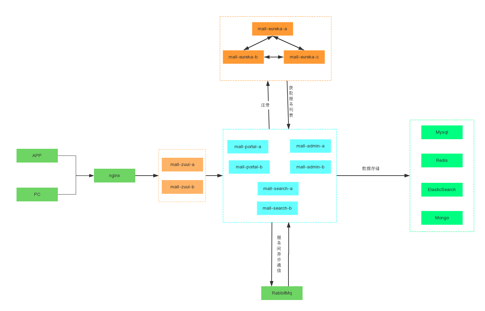
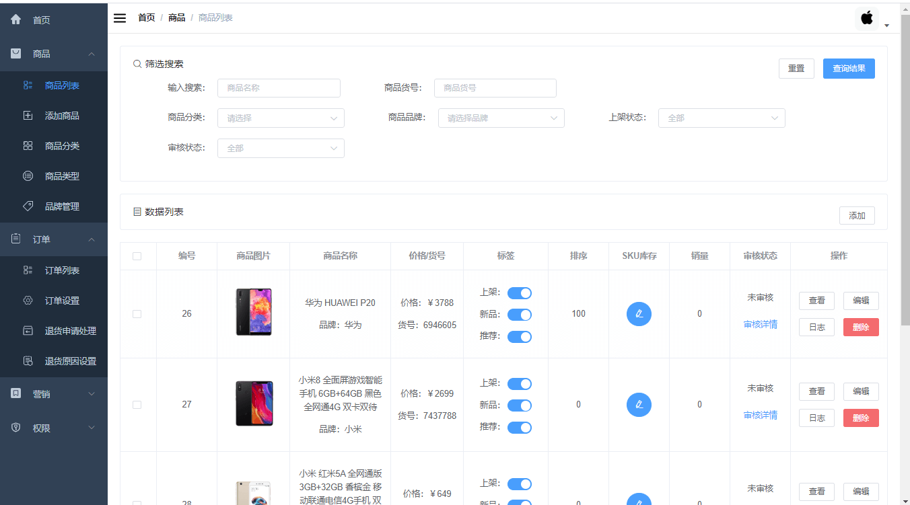

测试理论与用例设计
等价类、边界值、场景法、错误推测法落地为 60 条用例；通过阅读 DTO、异常处理器、日志切面源码，用白盒思维定向设计用例。
60 cases · 86.7% pass 功能测试报告 →SOFTWARE TEST ENGINEER · 2026
独立完成 mall 电商后台的完整测试闭环：环境部署、60 条功能用例、 160 个接口梳理、Postman 接口自动化、pytest 回归、JMeter 12 组梯度压测， 并对 6 个缺陷完成从现象到代码/数据库的根因定位。
$ pytest -q 62 passed, 9 xfailed in 3.40s # 9 xfailed = 6 个已知缺陷的回归用例 $ jmeter -n -t 登录接口压测.jmx -Jthreads=200 ... 登录 167.6 TPS P95 1,284 ms 错误率 0.00% 商品 791.9 TPS P95 365 ms 错误率 0.00% 订单 901.0 TPS P95 234 ms 错误率 0.00% $ grep -m1 '"password"' logs/mall-admin.log "parameter":{"username":"admin","password":"macro123"} ↑ DEFECT-05：明文密码被 INFO 级别日志记录 $ echo $? 0
01 / 岗位匹配
岗位 JD 里的每一条能力，在这里都能找到对应的测试动作、真实数据和可打开的材料。 不堆工具名，只展示做过什么、怎么判断、产出是什么。
等价类、边界值、场景法、错误推测法落地为 60 条用例；通过阅读 DTO、异常处理器、日志切面源码，用白盒思维定向设计用例。
60 cases · 86.7% pass 功能测试报告 →6 个缺陷全部完成"现象 → 日志 → 代码/数据库"的证据链定位，给出代码或 SQL 级修复建议，并固化为 xfail 回归用例。
6 defects · 4 high 缺陷报告 →商品-品牌-分类三表关联、订单明细对账、information_schema 字符集排查；用日志定位 emoji 500 与明文密码，附 Linux 命令对照。
多表查询 · 211 列排查 SQL 与日志分析 →独立编写 pytest + requests + PyYAML 四层框架，71 条用例，session 级 token 复用、YAML 数据驱动、xfail 缺陷回归。
71 tests · 3.4s 自动化框架 →拆解状态码、方法、Header、JWT、Content-Type；识别出"HTTP 全 200、真实结果在业务码"的项目特性，建立五层断言策略。
40 requests · ~130 assertions 接口测试报告 →JMeter 12 组梯度压测 + Little's Law 校验；GitHub Actions 做资产静态校验与手动触发全量回归；本作品集即 GitHub Pages。
12 runs · 300k requests 性能测试报告 →| 岗位要求 | 本作品集证据 | 材料 |
|---|---|---|
| 黑盒/白盒、等价类、边界值、场景法、错误推测 | 60 条用例按方法分类；白盒来自源码阅读（DTO 零校验、全局异常处理器、日志切面） | 功能测试 |
| 缺陷生命周期 | 发现 → 复现 → 定级 → 根因 → 建议 → xfail 回归 → 修复后转正 | 缺陷报告 |
| 实际项目测试经验 + 产出物 | 用例、Bug 报告、测试报告、Postman 集合、JMeter 脚本、pytest 源码全部可查 | 产出导航 |
| SQL 增删改查 + 多表查询 | 商品-品牌-分类关联、订单-明细对账、information_schema 排查、事务内 UPDATE/ROLLBACK | SQL 与日志 |
| Linux 常用命令 + 查看日志 | grep/tail/awk/du/ss/journalctl 命令对照；真实用日志定位两类缺陷 | SQL 与日志 |
| Python / Java / JS 任一语言 | Python 独立编写 71 条用例的四层自动化框架 | 自动化框架 |
| Selenium / Appium / JMeter / Postman / Charles / Fiddler | 熟练使用 JMeter、Postman；未使用 Selenium/Appium/Charles，不以未做过的工具充数 | 接口 · 性能 |
| HTTP 协议 + 接口测试流程 | 160 接口梳理、40 请求、五层断言、token 关联、两类错误响应体分析 | 接口测试 |
| 课程设计 / 竞赛 / 个人 / 开源项目测试经历 | 个人独立完成的完整测试实践，被测系统为开源项目 mall | 项目背景 |
| 加分：Pytest 自动化框架 | 四层架构、session token fixture、YAML 数据驱动、xfail 缺陷闭环 | 自动化框架 |
| 加分：性能测试 / 接口自动化 | JMeter 12 组梯度 + Little's Law；Postman 五层断言 + token 关联 | 性能测试 |
| 加分：Git / CI/CD | GitHub Actions：PR 静态校验 + 手动触发全量接口回归 | CI 说明 |
| 加分：GitHub / 博客 / 作品集 | 本仓库 + GitHub Pages 在线作品集 + 可下载测试资产 | 证据下载 |
02 / 被测系统
mall 基于 Spring Boot 3 + MyBatis + MySQL 8，包含后台管理端、前台会员端与搜索服务，依赖 Redis、MongoDB、RabbitMQ 等中间件。
主测目标是 mall-admin（后台管理端），完成功能、接口、自动化与性能测试； mall-portal 完成部署与连通性验证；mall-search 因缺少 Elasticsearch 且发现数据库密码配置错误，未部署 —— 两个阻塞原因都已定位并记录。


03 / 测试流程
不是按工具堆流程，而是让每一层的失败原因可以被独立定位：环境不通不甩锅给用例，用例失败不甩锅给性能。
依赖矩阵、端口占用、配置 diff，提前发现 mall-search 双重阻塞。
Maven 打包、服务启动、健康检查、OpenAPI 解析出 160 个接口。
等价类 / 边界值 / 场景法 / 错误推测，60 条用例真实 HTTP 执行。
Postman 40 请求 / 130+ 断言，五层断言 + token 自动关联。
JMeter 12 组梯度，稳态区间统计，Little's Law 交叉验证。
根因定位、修复建议、xfail 回归，修复后自动转正。
04 / 测试产出
报告中的数据来自实际执行；原始脚本、Postman 集合、pytest 框架与 HTML 证据都在仓库中。
范围、策略、环境依赖矩阵、测试数据策略、准入准出与风险应对。
60 条用例、逐条实际结果、用例设计方法与缺陷关联分析。
6 个标准 Bug 报告：环境、步骤、预期/实际、根因、修复建议、回归用例。
160 接口清单、Postman 集合结构、五层断言、token 关联与两类错误响应体。
12 组梯度数据、方法返工记录、Little's Law 校验、CPU 瓶颈定位与调优建议。
pytest 四层架构、session token fixture、数据驱动、xfail 缺陷闭环与 CI 集成。
多表查询、订单对账、information_schema 字符集排查、Linux 日志命令对照。
40 请求集合的导入、环境切换、执行顺序、结果解读与排错清单。
做对了什么、四次返工与踩坑、能力边界、下一步计划。
05 / 缺陷
4 个高危集中在安全与健壮性。最严重的两个都不是按用例找出来的： 一个来自压测后 1.84 GB 日志的异常，一个来自自动化框架里随手传的 emoji。
WebLogAspect 把完整请求体与响应体以 INFO 级别打印，无脱敏，覆盖全部 Controller。
4 字节 UTF-8 字符与 utf8mb3 列比较时报错，服务端返回 500；全库 211 个列受影响。
参数类型错误返回 HTTP 400，响应体却说"未登录"，状态码与响应体自相矛盾。
空对象创建商品、空数组批量发货时，MySQL 错误原文包含数据库类型、SQL 片段和行号。
Ant 单星号匹配不到根路径；带合法 token 又因动态权限资源表无此路径被拒绝。
删除不存在订单/分类返回 500，无法区分"本来就不存在"与"删除失败"。
DEEP DIVE 01
压测后磁盘上多了一个 1.84 GB 的日志文件。按 30 万请求算，平均每请求约 6.4 KB —— 顺着"为什么这么大"去查内容，发现每行都在打印完整请求体和响应体。
登录日志里直接写着 "password":"macro123"，响应体里还带着完整 JWT。读源码确认：切面以 INFO 级别输出、无字段脱敏、覆盖 mall-admin 与 mall-portal 全部接口。
DEEP DIVE 02
写字符集边界用例时传入「管理员🔒」，服务端返回 500。对照实验：3 字节中文正常、4 字节 emoji 报错，边界精确落在 UTF-8 字节数上。
查 information_schema 确认 ums_admin.username 是 utf8mb3、库默认 utf8mb4；MySQL 端直接复现 ERROR 1267。根因是 MySQL 5.7 时代导出的建表语句遗留，全库 211 个列受影响。
06 / 性能
3 个接口 × 4 档并发 = 12 组稳态压测。登录接口并发从 50 加到 200（4 倍）， TPS 停在 167 不动，响应时间从 298ms 涨到 1160ms；查询类接口则能到 800–900 TPS。
爬坡 10s + 稳态 45s，只统计稳态区间。单位：请求/秒。
登录接口在 50 并发后吞吐基本不再增长；商品/订单查询约为其 5 倍。
| 并发 | 登录 | 商品列表 | 订单查询 |
|---|---|---|---|
| 20 | 136.1 | 753.0 | 856.2 |
| 50 | 166.6 | 834.7 | 829.3 |
| 100 | 167.2 | 801.9 | 803.4 |
| 200 | 167.6 | 791.9 | 901.0 |
单位：毫秒。看 P95 而不是平均值，避免长尾被大量快请求掩盖。
200 并发下登录 P95 已达 1.28s，但错误率仍是 0% —— 错误率不能单独用来判断系统健康。
| 并发 | 登录 | 商品列表 | 订单查询 |
|---|---|---|---|
| 20 | 264 ms | 58 ms | 26 ms |
| 50 | 393 ms | 75 ms | 90 ms |
| 100 | 717 ms | 188 ms | 184 ms |
| 200 | 1,284 ms | 365 ms | 234 ms |
L = λW：平均并发数 = 吞吐量 × 平均响应时间。取 200 并发档反推理论响应时间，三个接口偏差都小于 3%。
| 接口 | 并发 L | 实测 TPS λ | 实测平均 W | 理论 W = L/λ | 偏差 |
|---|---|---|---|---|---|
| 登录 | 200 | 167.6 | 1,159.9 ms | 1,193 ms | 2.8% |
| 商品列表 | 200 | 791.9 | 250.4 ms | 252.6 ms | 0.9% |
| 订单查询 | 200 | 901.0 | 220.7 ms | 222.0 ms | 0.6% |
07 / 自动化与工程化
Postman 做接口探索，pytest 做回归；6 个缺陷全部写成 xfail 用例，修复后会自动"报警"。
# DEFECT-06：utf8mb3 列遇 4 字节 emoji 触发 SQL 1267 @pytest.mark.xfail( strict=True, reason="DEFECT-06：待修复", ) def test_defect06_emoji_in_username_should_not_crash(raw_api): resp = raw_api.post( "/admin/login", json_body={"username": "管理员🔒", "password": "x"}, ) # 当前服务端返回 500；修复后应为 404 assert resp.http_status == 200 assert resp.body["code"] == 404 # 运行结果： 62 passed, 9 xfailed in 3.40s # 修复后 → XPASS → strict 模式判 FAILED → 强制更新用例
环境相关的值收敛到配置层，用例层只写业务逻辑。换环境改一行，加场景只加 YAML。
skip 会永久跳过，永远不会提醒；xfail(strict=True) 在缺陷修复后变成 XPASS，直接判失败，强制测试人员更新用例并关闭 Bug。
08 / 证据
HTML 报告、Postman 集合、JMeter 脚本、pytest 源码与 CI 配置全部保留在仓库中。
62 passed / 9 xfailed · 71 条用例
登录接口 · 200 并发 · 完整图表
40 个请求 · 可直接导入 Postman / Newman
3 个 JMX + users.csv + 稳态汇总 CSV
60 条用例逐条实际结果 · 可筛选统计
计划 / 用例 / 缺陷 / 接口 / 性能 / 自动化 / 复盘
config / utils / data / testcases 四层
PR 静态校验 + 手动触发全量回归
09 / 复盘
"第一轮压测算出的 TPS 是 100、200 这种整齐整数。我先怀疑的不是服务端，而是自己的测量方法 —— 后来发现运行时长几乎全被爬坡阶段占满。推翻重做后，数据才变得自洽。" — 性能测试方法返工记录
CONTACT
每个数字、每条结论都能追溯到原始数据、日志或代码。欢迎查看完整报告，或直接联系我。